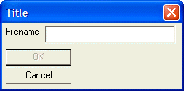
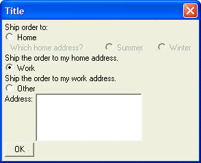

Conditionally Disabling Controls
It is a common requirement on a dialog to control whether certain dialog controls are grayed out (i.e. disabled) if a certain condition is true. For example, you may not want to let the user click the OK button if they have not correctly filled in the dialog.
Alpha Anywhere allows you to disable controls on the dialog using the '?' character inside the specification for a control. You include a logical expression after the '?'. If the expression is .T. then the control is enabled. If the expression is .F., the control is displayed as grayed out.
For example, the following dialog disables the OK button if the Filename text box has not been filled in:
ui_dlg_box("Title",<<%dlg% {region} Filename: [.32filename] {endregion}; <*15:&OK?filename<\>"">; <15:&Cancel> %dlg%) |
This script creates this dialog:

Lesson 4: Disabling Controls
 Note : If you had expressed the condition as ' firstname<>"" ', you would need to use the '\' character to escape the '>' sign. e..g <*15:OK?filename<\>"">
Note : If you had expressed the condition as ' firstname<>"" ', you would need to use the '\' character to escape the '>' sign. e..g <*15:OK?filename<\>"">
 Note : You must not insert any spaces into the conditional expression.
Note : You must not insert any spaces into the conditional expression.
In Lesson 2, we discussed an example that had two groups of radio buttons. We mentioned that the second set of radio buttons could be disabled unless a particular selection was made in the first set of buttons.
In the following script, the 'Summer' and 'Winter' radio buttons are only enabled if the 'shipto' radio button is set to 'Home'. For example:
Shipto = 2 text1 = "Which home address?" result = ui_dlg_box("Title",<<%dlg% Ship order to:; (shipto:Home); {text=25:text1?shipto=1} (home:Summer?shipto=1) (home:Winter?shipto=1); Ship the order to my home address.; (shipto:Work); Ship the order to my work address.; (shipto:Other); Address: [.30,5address]; %dlg%) |
This script creates this dialog:

Lesson 4: Conditional Radio Buttons
Notice in the above script that in order to gray out the static text ('Which home address?'), the static text object has to be converted into a dynamic text object.
Next
Conditionally Showing Controls
Limitations
Desktop applications only.